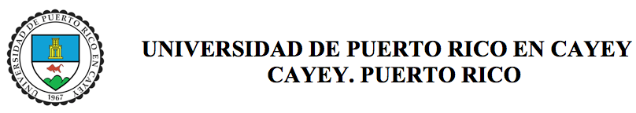

<ion-view>
  <ion-content class="has-footer" style="background: white;
    background-attachment:fixed;
    background-position: center;">
    <h1>4to Encuentro Universitario de Salud Mental: La salud mental en la era digital</h1>
  
  <ion-list>
    <ion-item>
      <b>Fecha:</b> 7 de abril de 2016
    </ion-item>
  	<ion-item>
			<b>Hora:</b> 8:00 a.m - 4:30 p.m.
		</ion-item>
		<ion-item style="white-space: normal;">
			<b>Lugar:</b> Anfiteatro del Nuevo Edificio de Ciencias
		</ion-item>
    <ion-item style="white-space: normal;">
      <b>Aplicación creada por:</b> <a href="https://pr.linkedin.com/in/alesanz237">Alejandro Sánchez</a>
    </ion-item>
  </ion-list>
  </ion-content>
</ion-view>
